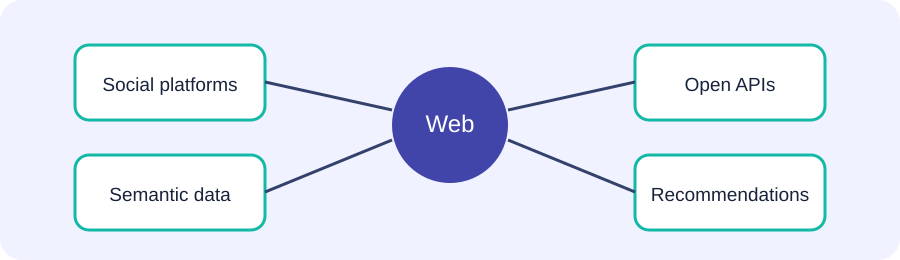

What to learn: Web 2.0 is strongly associated with participation and collaboration.
1. Web 2.0: interactive and social Web
Web 2.0 describes the growth of participatory websites where users create, share and collaborate on content. Blogs, wikis, social networking platforms, comments and collaborative tools are common examples.
2. Technologies behind Web 2.0
AJAX supports partial page updates. RSS (Really Simple Syndication) distributes updates in a standard feed format. Open APIs let applications exchange data or use another service's capabilities. Ruby on Rails is a web application framework that follows convention-over-configuration principles.
3. Blogs, wikis and social networks
Blogs publish posts, often in reverse chronological order. Wikis allow multiple contributors to create and edit linked pages. Social networking sites help people create profiles, connect and share content.
4. Web 3.0 and the Semantic Web
The Semantic Web aims to make data more meaningful and machine-readable by describing relationships and meaning, not just presenting documents. It can help software combine information from different sources.
5. Widgets, mashups and RDF
A widget is a small reusable interface component. A mashup combines data or functions from multiple sources into one application. RDF (Resource Description Framework) represents information as relationships, often expressed as subject–predicate–object triples.
6. Web-based information systems and search engines
Web-based information systems deliver services and manage information through a browser. Search engines discover and index pages, then rank results in response to a query using signals such as relevance, quality and freshness.
7. Recommender systems
Recommender systems suggest items such as videos, products or articles. They may use content-based filtering, collaborative filtering or hybrid methods. Good systems should consider privacy, fairness and transparency.
8. Blockchain, edge computing and dark mode
Blockchain can provide shared, tamper-evident records, though cost, scalability and energy use depend on the design. Edge computing processes data closer to users or devices to reduce latency. Dark mode uses a darker interface theme and can improve comfort in low-light settings.
Key terms to remember
- HTML: A markup language used to structure web content.
- SOAP: An XML-based protocol for exchanging structured messages.
- IoT: A network of physical devices that collect or exchange data.
Quick revision quiz
Which format represents data as subject–predicate–object triples?